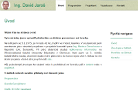

Programátor
Zde uvádím mé školní projekty v rámci výuky na vysoké škole v letech 2015-2017
Jedná se o bakalářskou práci Navrhování zahrad, ročníkový projekt aplikace Bunny War, obhajobu zkoušky z Informačních systémů, jejímž jádrem bylo vytvořit osobní webovou stránku Ing. David Jaroš. Pro potřeby mého zaměstnavatele jsem dále vytvořil firemní webovou stránku naší společnosti Projekce na 50. rovnoběžce.
| Název projektu | Desktopová aplikace pro vytváření grafických návrhů zahrad |
|---|---|
| Název aplikace | Navrhování zahrad |
| Programovací jazyk Vývojové prostředí |
.NET/Visual C#, framework WinForms, IDE Visual Studio 2015 |
| Fáze | GUI a logika aplikace hotová, kódování dalších funkcí, plánované dokončení 4/2017 |
| Odkaz ke stažení | Stáhnout zdrojový kód, dokumentace, spustitelný program |
| Náhled okna |
{kind=link}
| Název projektu | Desktopová aplikace stolní deskové hry Bunny War |
|---|---|
| Název aplikace | Bunny War |
| Programovací jazyk Vývojové prostředí |
.NET/Visual C#, framework WPF, IDE Visual Studio 2015 |
| Fáze | Dokončeno 5/2016 |
| Odkaz ke stažení | Stáhnout zdrojový kód, dokumentace, spustitelný program |
| Náhled okna |
{kind=link}
| Název projektu | Osobní internetové stránky Ing. David Jaroš |
|---|---|
| Programovací jazyk Vývojové prostředí |
HTML5/CSS IDE PhpStorm 2016 |
| Fáze | Dokončený obsah a layout stránek, plánovano vytvořit kontaktní formulář, propojení s databází a možnost pozdější administrace. Plánované dokončení 5/2017 |
| Odkaz ke stažení |
Projekt mé stránky verzovaný na GitHub Původní verze mé stránky vytvořená v CMS Wordpress |
| Náhled okna |  |
{kind=link}
| Název projektu | Firemní internetové stránky Projekce na 50. rovnoběžce |
|---|---|
| Programovací jazyk Vývojové prostředí |
Vytvořeno v redakčním systému Wordpress |
| Fáze | Dokončeno 12/2016 |
| Odkaz ke stažení | www.projekce50r.cz |
| Náhled okna |
{kind=link}